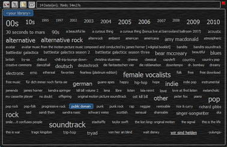
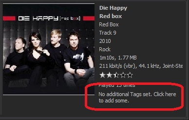

|
The Nemp tag cloud
|

The tag cloud is (as far as I know) something new for mp3 players.
Whether it is useful or not is up to you.
Basic idea
Properties like artist, album, genre, date and decade from the audio
files will be collected into one big list. The most common used of these "tags"
will be displayed in a tag cloud, as it is known from many websites.
You can then select a tag (e.g. "90s" or "pop"), and Nemp will show you
all titles from 1990 to 1999 (all titles tagged with "pop"). When you
double click a tag, Nemp will create a new tag cloud limited to the
files that are tagged with the selected one.
Additional tags
The tag cloud becomes more interesting, when you use additional tags
(i.e. not only artist-album-genre-date). Nemp can store (almost) any
number of additional tags. These tags have no special meaning
(like "artist"), but are just used to describe the track a little bit
more detailed. You can add some alternate genres, or personal tags like
"just wunderful" or "beach holiday 2012".

It would be a lot of work to do this for every single file. Therefore:
Tags from last.fm
Nemp can use the last.fm database to get additional tags for your audio
files. These tags are set by the last.fm community and are quite useful
in most cases. Choose from the menu "Media library -> Get
additional tags for selected files".
Note 1: This will only
work, if the default tags (artist, title) are already set.
Note 2: This will take some time. last.fm allows only a few queries per
second. If Nemp would use as many queries as your internet connection
can handle, Nemp will permanently be blocked from using this service.